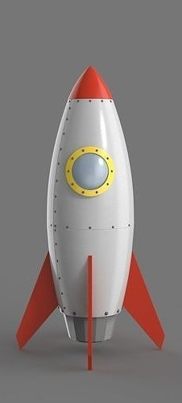
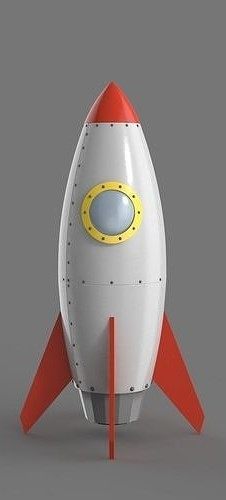

Tranformers
Transformers: Prime es una serie animada estadounidense basada en la franquicia de juguetes Transformers de Hasbro. La
serie se centra en los Autobots de "Team Prime", formado por Optimus Prime, Ratchet, Arcee, Bumblebee y Bulkhead, y sus
aliados humanos mientras intentan proteger la tierra de los villanos Decepticons y su líder Megatron.
La caja aparece en la Primera temporada, donde después de la aparente muerte de Megatron, Starscream se convierte en el
nuevo líder Decepticon. Sin embargo, Megatron se encuentra moribundo entre los escombros del puente espacial y vuelve al
poder después de un largo tiempo. Al final de temporada los Autobots tendrán que aliarse con Megatron cuando la tierra se
ve en peligro por la antigua y poderosa amenaza llamada Unicron, que reside en el centro de la tierra.
La caja es una simple caja de almacenamiento utilizada para guardar cosas varias. Mayormente estan para decoración y dar
mas vida al entorno.
Precio: 4.90€